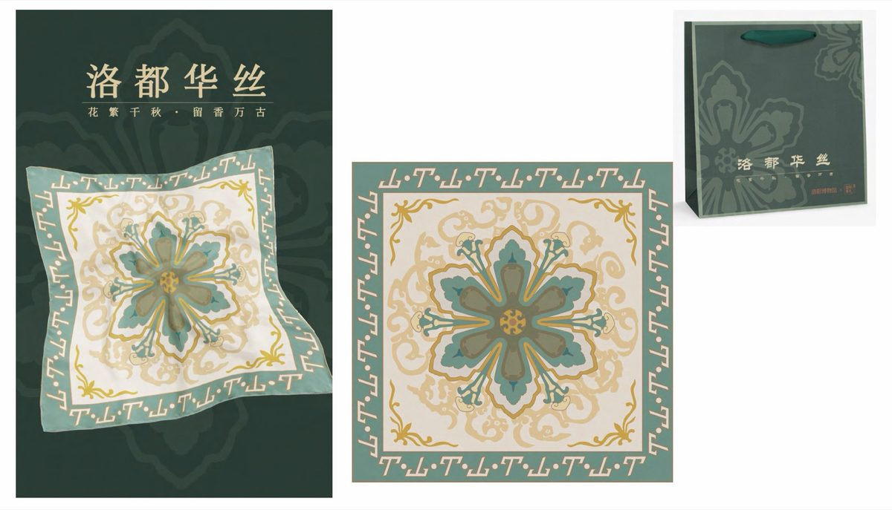
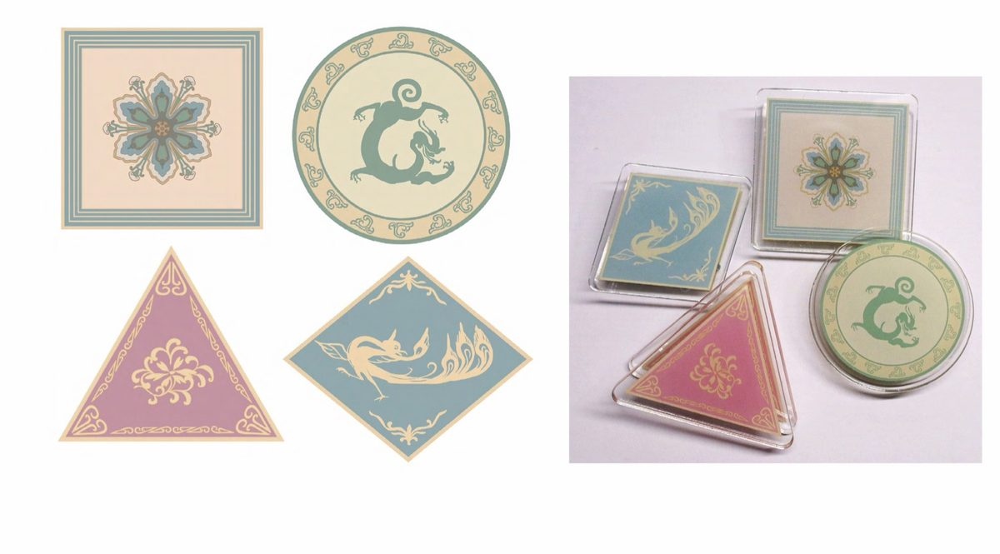
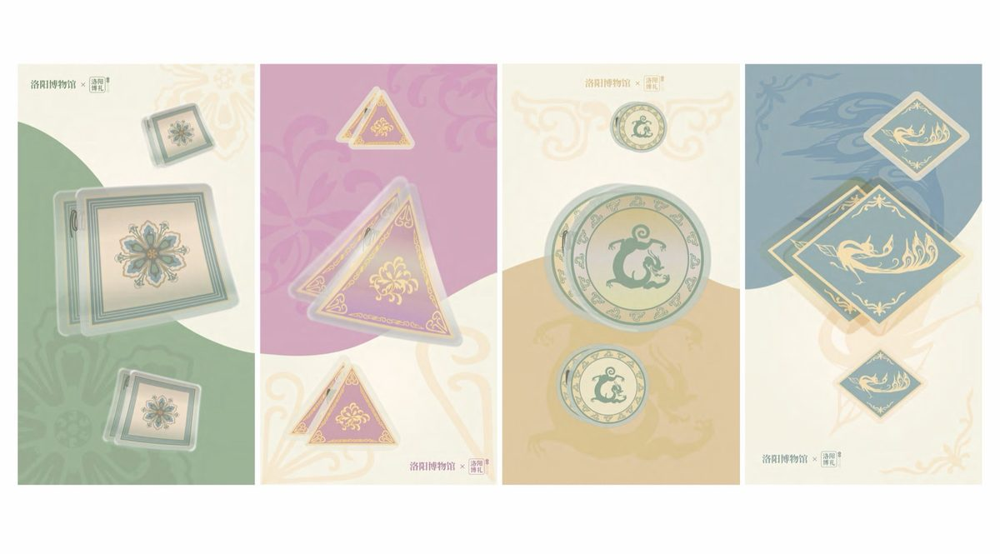
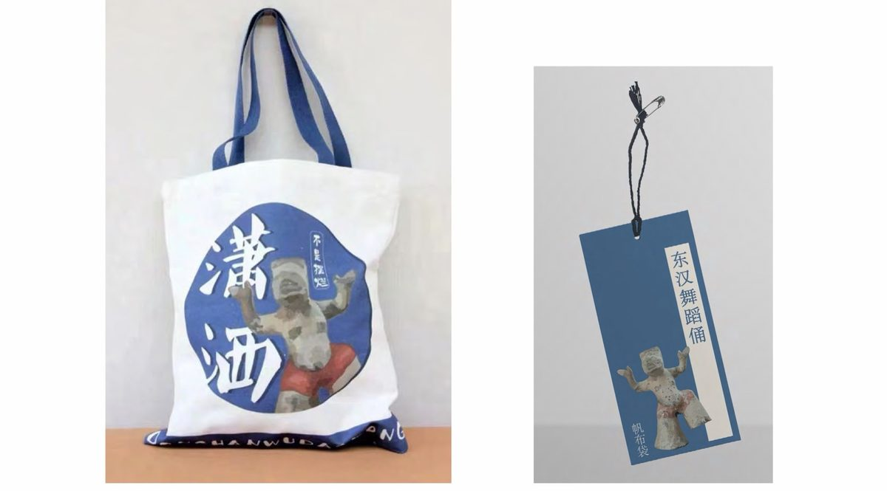

Museum Cultural Product Design
A product line drawn from artifacts in the Luoyang Museum: a silk scarf, acrylic clips and their posters, and a tote bag inspired by the pattern of Eastern Han dynasty dancing figurines.
- Tools and medium
- Product Design, Packaging, Pattern







